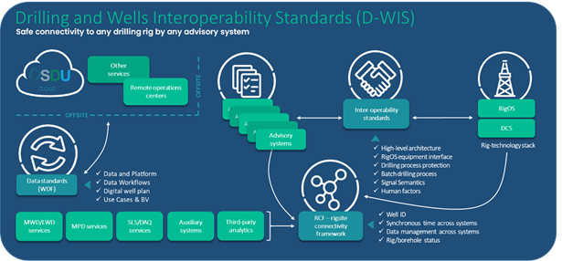
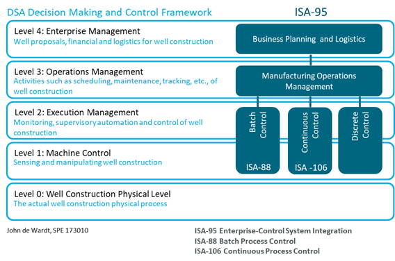
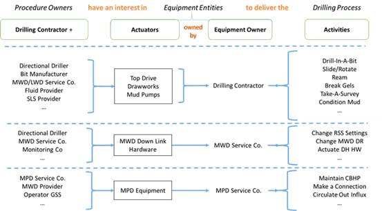

Requirements
for a Drilling and Wells Interoperability Standard
A White Paper
Increase safety and efficiency through the development
of a standardized interface that enables collaborative automation of
wellbore construction.
White paper
written by
|
Eric Cayeux |
Norce |
|
Mark Carrier |
RTI |
|
Clinton Chapman |
Schlumberger |
|
John Macpherson |
Baker Hughes |
|
|
|
|
|
|
|
|
|
4 February 2022
The Drilling and Wells Interface Standards group is developing a set of
standards for an open, interoperable and secure
interface between participants in well construction. External companies such as
service companies, operators and equipment suppliers,
will interface their technology to the drilling rig using the elements of the
standards. The technologies could be algorithms, models, automation advisors or
controllers, or various auxiliary equipment with their own control systems.
This paper serves to document an overview of the intended scope of the
standards, and a view of the DWIS requirements.
There is increasing development and deployment
of systems at the rigsite for drilling process
automation. These systems deliver advice and equipment set points to the rig.
They therefore require an interface to the rig operating and control systems.
The number of players interfacing to a large number of rig
operating and control systems in a bespoke fashion is expensive and carries a
significant HS&E risk. There is a significant cost to all parties in
developing and maintaining reliable interfaces for each drilling
installation.
There is therefore a need to define a standard that
allows for interoperable operations in a safe and secure fashion. The technical
benefits of such standards include increased fidelity, efficacy, integrity and security of operations.
The lack of standards for an interoperable
interface is a significant impediment to rapid development of systems automation
at the rigsite.
The Drilling and Wells Interoperability
Standards (DWIS) group is currently developing and demonstrating a set of
interoperability standards for this multi-player environment. This document
gives and introduction to the scope of this work, and a list of requirements
for the standards. It is by no means a complete document, but it should support
a working discussion of DWIS.
It is important to understand that DWIS is
developing a set of standards defining an interface between software
components. The requirements listed in this document are, therefore, for the
multi-player software environment at the rigsite,
designed to permit reliable and secure plug and play operations.

Figure 1: Components shown in light blue are
DWIS components; all others (green) represent proprietary components. The main
DWIS elements are an interoperable standard for drilling rig interface, a rig
connectivity framework for all components located on the wellsite, and data
standards for onsite and data exchange. The OSDU Wells Data Foundation (WDF) is
handling the last item.
The scope
of the Drilling & Wells Interoperability Standards (DWIS) covers the
wellsite (rigsite) and the exchange of data and
commands in real-time. The four elements common to all players are the rig
connectivity framework, the interoperability standards between third party
applications and the rig technology stack, data schema and exchange standards
for the wellsite, and connectivity to the Open Subsurface Data Universe (OSDU)
via their Edge Standard. This document contains the requirements for the first
two components, which are part of DWIS. The data schema and exchange standards
are part of the OSDU Wells Data Foundation
initiative. The diagram above shows proprietary components, colored green,
which are out-of-scope. The standard specifies only software, not hardware, and
does not extend to communication protocols or user interfaces.

Figure 2: Systems Automation Standards,
shown in relation to the Drilling Systems Automation Decision making and
Control Framework, described in SPE 173010, 2015, Drilling Systems Automation
Roadmap - The Means to Accelerate Adoption
In terms of
standards, ISA-95, ISA-88 and ISA-106, among others, are relevant to DWIS. In
the DSA Decision Making Framework, DWIS occupies primarily level 1 and 2,
although later components such as batch processing will be at level 3. Some of
the terminology used in DWIS, has evolved from ISA-88, the batch processing
standard, although the implementation is focused on well construction and the
terminology is therefore, more narrow than in ISA-88.

Figure 3: The DWIS Interface Construct in
ISA-88 Terminology
Fique 3
shows the DWIS rig interface construct in ISA-88 terms: “procedures use
equipment to deliver a process”. There are several levels depending on who owns
the equipment. DWIS will develop an interface standard that applies to all
examples in this figure. It does this through a construct in which the
procedures are in advisor applications that have optional third
party equipment; these advisor applications communicate via a DWIS
interface with the Rig OS or DCS.
The remainder
of the document deals with the requirements for the DWIS components in figure
1.
There are
requirements in several aspects of the system, loosely grouped as follows:
·
Requirements related to commercial
aspects of the standards
·
Requirements related to scope of the
standards
·
Requirements related to Drilling
Process Protection
·
Requirements related to the Semantic
of RT Signals
·
Requirements related to High Level
Architecture
·
Requirements related to the RIG OS
(ADCS) Equipment Interface
These are
requirements related to deployment of DWIS in a commercial environment. These
requirements drive the selection of relevant technologies by asset owners,
software and algorithm developers, and system integrators.
|
Requirement ID |
Commercial Requirement |
Considerations |
|
|
DWIS shall
provide an open development environment, supported through an open
architecture |
Adoption of an
open standard will promote competition through new business models and
offerings in the marketplace |
|
|
DWIS shall
support best-in-class solutions from multiple vendors in a single system |
Few, if any,
vendors provide best in class solutions for the full scope of well
construction. This requirement opens up the market
for vendors to provide their best-in-class solutions to any system. |
|
|
Systems built
using DWIS shall support conforming components from any competitive vendor |
This prevents
vendor lock-in, where the end user can only use products from one vendor. |
|
|
Systems built
following DWIS shall substantially reduce the effort to integrate different
vendor systems |
This is a key
requirement. Reducing the cost and time of integrating systems and components
from different vendors into a single system is of commercial value. |
|
|
Preservation of
the owner’s configuration and programming intellectual property with minimal
rework from one generation of DWIS to the next. |
There is
significant cost and time spent by owners in defining their advising and control
strategies. Requiring rewrites at generational changes means it is often too
expensive to upgrade. |
|
|
Participation in
the development and use of DWIS shall not jeopardize the intellectual
property of participants. |
DWIS
respects intellectual property concerns and components using DWIS shall not
expose their intellectual property. This is required to have a healthy commercial
environment for DWIS users. |
|
|
There shall be no
cost to obtaining DWIS |
DWIS is an open
standard, and a no-cost way of obtaining these standards is critical to
enabling adoption in the marketplace. |
The requirements
governing scope constrains the relevance of the DWIS interface. In particular,
the DWIS interface is only relevant to data exchange, and process and batch
automation at the rigsite between third party
equipment and rig drilling control systems. DWIS also incorporates activities
such as the ISA95/IEC 62264 Enterprise-Control System Integration standards,
the ISA88 Procedure Automation for Batch Process Operations standards, and the
DSA Decision Making and Control Framework described in John de Wardt et al,
2015, Drilling Systems Automation Roadmap - The Means to
Accelerate Adoption, SPE 173010, https://doi.org/10.2118/173010-MS
|
Requirement ID |
Scope Requirement |
Considerations |
|
|
DWIS shall apply
to automation of well construction at the wellsite |
Systems
conforming to DWIS are activities related to well construction, such as
drilling, running casing, cementing, etc. DWIS is concerned with
interoperability in the automation of these multiplayer activities |
|
|
The scope of DWIS
shall encompass ISA95/IEC62264 levels 1, 2 and 3. |
DWIS compliant
components will include sensing, actuating, control, advising, visualization,
and historical data collection. The DSA Decision making and Control Framework
in paper https://doi.org/10.2118/173010-MS shows this standard applied to
drilling automation. |
|
|
DWIS shall apply
to rigsite connections between third party
applications and equipment, and the Rig drilling control systems: ADCS or
DCS. |
Connection
and control of rig equipment remains the responsibility of the ADCS or DCS.
DWIS does not apply to these interfaces. |
|
|
DWIS shall apply
to data exchange, process automation, and batch automation of well
construction activities. |
Connection of third party applications for observation and control,
leading to batch control of well construction |
|
|
DWIS will use
industry standard communications protocols, and other existing standards, as
needed and as specified by its members |
Defining
communications protocols are out of scope of DWIS |
Drilling
process protection is composed of at least three types of functionalities:
·
Safe Mode Management (SMM): If for any reason, an automated
control function fails or the connectivity between a 3rd party app
and the RigOS is lost, the RigOS applies a series of actions to put the
drilling machines in a state that is safe for the current operation. This state
lasts for at least a few tens of second in order to
leave time for the human operator to regain control of the situation even
though his situation awareness may have been low. In the context of DWIS, the only
addressed SMM functions are those linked to the protection of the drilling
process. i.e., SMM functions that deal with the protection of the drilling
machines are outside the scope of DWIS.
·
Fault, Detection, Isolation and
Recovery (FDIR): If
a drilling process incident occurs, it is important to respond as quickly as
possible. FDIR functions monitor continuously the process and are capable of detecting when an abnormal situation has
started. After detection, the FDIR function proceeds with an immediate response
to keep the process as safe as possible. Then after identification of the cause
of the dysfunction, it applies procedures to isolate the problem. Finally, when
isolation has been successful, it applies procedures to recover from the
problem and get ready to resume the original normal command. FDIR functions apply
when automated control functions are active, but also when human operators
control the machines. A failure of the isolation or recovery procedures may
trigger SMM functions. In the context of DWIS, only FDIR functionalities that
concern the drilling process are addressed. In other words, DWIS does not
interfere with FDIR functionalities that protect the drilling machines. FDIR is
a subfield of control engineering that concerns itself with
monitoring a system, identifying when a fault has occurred, and pinpointing the type of
fault and its location (see https://en.wikipedia.org/wiki/Fault_detection_and_isolation)
·
Safe Operating Envelope (SOE): Commands sent to the drilling
machines shall be within acceptable limits with the regards to the tolerances
of the drilling process. The RigOS combines the safe operating envelopes for
the drilling process with the safe operating limits that protect the drilling
machines. SOE functions apply for both human operator and automated function
commands. It is not in the scope of DWIS
to address SOE functionalities concerning the protection of the drilling
machines.
|
Requirement ID |
Scope Requirements common for SMM, FDIR and SOE |
Considerations |
|
|
DWIS will enable
the description and transmission of DPP information from an external
application to the ADCS or DCS on the rig. |
The purpose of
this work is not to solve how to generate the parameters of the DPP
functions but assist in transmitting information across computer system
boundaries. |
|
|
DWIS’s interface
for DPP functionalities shall be flexible to account for a wide range of ADCS
or DCS’ supported DPP functionalities. |
The purpose of
this work is not to impose a functionality level for DPP functions
implemented in the ADCS or DCS, but to allow external application to utilize
only one interface (the DWIS interface) to access multiple ADCS or DCS
solutions instead of having to adapt for a multitude of different solutions. |
|
|
The DWIS
interface for DPP functionalities shall be simple to use both on the ADCS or
DCS side, and on the external application side. |
DWIS shall avoid
imposing any restrictions to either the ADCS or DCS, or the external
application. For example, there shall not be a restriction on the programming
languages used on each side of the interface. |
|
|
It is not within
the scope of DWIS to provide a solution for concurrent contributions of
parameters for DPP functionalities. |
The ADCS/DCS shall
have a strategy to manage concurrent access for DPP functionalities. |
|
|
The DWIS
interface shall allow the ADCS or DCS to describe its supported functionalities
such that external application can adapt the passage of parameters
accordingly. |
A form describing
capabilities shall be available so that both sides of the interface can agree
on how to pass parameters. |
|
|
It is not in the
scope of DWIS to address DPP configurations that require sub-second updates. |
Requiring
sub-second updates demands tightly integrating the external
application into the ADCS or DCS. |
|
|
The DWIS
interface for DPP functionalities shall enforce a form of detection for loss
of connection between the two sides of the interface. |
It is important to
detect a connection outage between the two sides of the interface, and to
execute SMM procedures the ADCS or DCS side in such an eventuality. |
Drilling real-time signals are currently
accessible through different real-time data sources, including WITS0, WITSML,
OPC-DA, OPC-UA, API, etc. With such real-time data sources, the drilling
real-time signals either are in predefined positions in records, e.g., WITS0,
or are accessible through a mnemonic in a time-based log, e.g., WITSML, or
other sort of tag reference, e.g., OPC-DA. To access the correct real-time data
channel, one must know beforehand where to find the information, i.e., the
mnemonic, tag or position in which record.
Furthermore, there is very limited metadata associated with the signal. When metadata information is available, it is
in a statically defined format.
In practice, drilling operations are evolving
constantly, and the availability of drilling real-time signals changes almost on a daily basis. Therefore, personnel in maintaining support
applications for signals, spend much time updating which signals are now
available and where to find them. Also, as metadata is very limited, such
applications cannot take full advantage of the actual qualities and
uncertainties associated with the available signals. In addition, different
applications exchange very few calculated signals, simply because it is already
cumbersome to connect to measured signals. This in turn reduces the possibility
of achieving synergies between the different systems that are monitoring and
controlling the drilling process. Finally, it is difficult to create automatic
quality control of available drilling real-time signals since connecting them
requires a lot of work.
By defining a flexible and generic way to
describe the semantic of real-time signal, it is possible address most of these
issues – by making available facts about each available signal. These facts
describe the meaning of the signal. A potential consumer of the signal can read
those facts and determine whether the signal corresponds to its requirement or
not. The consumer discovers real-time signals dynamically based on
characteristics that are important for its application.
Various consumer applications may have
different perspectives on what is a relevant signal for their own
functionality, and they can choose dynamically the most relevant available
drilling real-time signal. In addition, a consumer application can make
available calculated signals that may be of interest for other applications. By
providing the semantic of these additional signals, they provide an opportunity
for other applications to discover them.
|
Requirement ID |
Semantic RT Signal Requirement |
Considerations |
|
|
DWIS will enable
the description of the semantics of drilling real-time signals. |
By exposing the
semantic of each available signal, it is possible for any application to
discover and choose which signal is of interest for its own functionality |
|
|
The description
of the semantics of drilling real-time signals proposed by DWIS shall be
flexible and generic. |
It is important
that the solution chosen for describing the semantic of drilling real-time
signal can support currently available signals and future signals that are
not yet “invented”. |
|
|
The description
of the semantics of drilling real-time signals shall rely on a very concise
method. |
As there are tens
of thousands of real-time signals at the rig site, and there can be even more
signals that may be made available when calculated signals are also
exchanged, it is important that the proposed solution to describe the
semantics of real-time signals is not subject to combinatorial explosion. |
|
|
The chosen method
to provide a semantic description of drilling real-time signals shall support
multiple data sources. |
The drilling
process involves many different service companies. The constellation of the
service companies that are present during the drilling process evolves
constantly. Therefore, it is important that the proposed solution is
compatible with a very changing environment. |
|
|
The introduction
of the description of the semantics of drilling real-time signals shall not affect
refresh rates, delays, uncertainty, and quality of the actual signals. |
As there are
already problems with latency, refresh rates, uncertainty
and data quality in general, it is important that the introduction of
semantical description does not exacerbate the current situation. |
|
|
The semantic
description of drilling real-time signals shall be completely agnostic to
which programming languages, operating systems or any other computer
specificities is used by the data provider or the data consumer. |
The different
service providers utilize many different software solutions, including, PLCs,
IoT, Servers, handheld computers, etc., running many different types of OS
like Windows, Linux, iOS, Android, Step7… and programmed in various
languages, e.g., Python, Java, C, C++, C#, … Also, new computer solutions,
new OS and new programming languages will arise in the future. It is
important that the chosen solution does not block the access to the DWIS
interoperability to any of those possibilities. |
|
|
The semantic
description of drilling real-time signals shall be compatible with the
access-control rules implemented in any drilling operations. |
Typically, the
proposed solution shall contain an AAA (Authentication, Authorization and
Accounting) strategy so that only authorized parties can access the
information. |
High-level architecture requirements covers the system organization, so that it is scalable to batch
processing of wellbore construction. It is concerned with the hierarchy of
procedures, the multiplayer advisor environment, authorization and
authentication of components, and the state of the various activities on both
surface and downhole. These requirements ensure an architecture that is
relevant to batch processing and, in future, well construction orchestration.
|
Requirement ID |
Requirement |
Considerations |
|
|
Define approach
for batch procedure development. |
The standards
shall be capable of scaling to batch processing of a wellbore, where a batch
is a borehole section, fluid for a borehole section, etc. |
|
|
Define approach
for handling multiple advisors during a phase of drilling. |
There could be
multiple advisors, from multiple players, running in parallel during any
phase of the drilling operation |
|
|
Define approach
for handling hierarchy of drilling phases and handling of advisors. |
Wellbore
construction is a hierarchy of phases, as partially defined in IADC DDR Plus.
The architecture shall be capable of handling multiple advisors across and
between these phases. |
|
|
Define approach
for contextualization of common data items. |
DWIS is primarily
concerned with data exchange, and it is therefore important to define – and
know – the context of the data. |
|
|
Define AuthN/Z for integrating into system. |
Advisors
(applications) need to be fully authenticated and authorized before becoming
members of the system |
|
|
Define
methodology for communicating to Driller from Batch. |
As part of the
architecture, it should be specified how the driller communicates with batch
processes (and sub-processes) to develop a standard, reliable, interface |
|
|
Define method of
registering Batch processes relative to a phase of Drilling. |
A batch process
may be valid and operational across multiple drilling phases, and this
validity must be known to schedulers and third party
advisors |
|
|
Identify and
address cross cutting concerns including but not limited AuthN/Z,
Logging, Batch Processing, Advisor Registration, Advisor State Management,
Drill State, Rig State |
Various concerns
may apply to all components in DWIS. These need to be identified and
addressed in a scalable fashion |
|
|
Architecture
integration with Drill State and Rig State inference. |
Rig State (rig
activity) and Drill State (borehole activity and condition) are relevant to
registered advisors. They may prepare to run, execute, or terminate,
depending on these states. Therefore, definitions should be agreed upon that
are scalable across control and batch processing. |
|
Requirement ID |
Requirement |
Considerations |
|
|
Rig equipment
interfaces will support the various roles of well construction. Currently we are defining ·
Operational view – Equipment agnostic interface that
expose normalized rig functions and support safe operations. ·
Engineering view – Equipment agnostic interface that
support equipment configuration. |
Each interface
specification will define the inputs, outputs and
behavior. Interfaces must conform to
the specification regardless of the technology used for implementation. |
|
|
Interfaces must
be flexible enough to evolve over time. Interfaces will implement a
versioning scheme to support evolution of an interface. |
We will only
define parts of the interface which are required not parts which “may” be
used in the future. An interface can
be update when in data points are required. |
|
|
A Platform
Independent Model (PIM) will define the data model. |
A PIM exhibits a specified
degree of platform independence so as to be suitable
for use with a number of different platforms of similar type |
|
|
Platform Specific
Models (PSM) shall implement the D-WIS data model. |
PSM combines the specifications in the PIM with the
details that specify how that system uses a particular type of platform. When defining a PSM
a target Platform Model has to be available. |
|
|
Interfaces must
support security |
Security should
be an intrinsic part of the interface.
There should not be a requirement as to which method of security to
use. Governance and policies should
define security. |